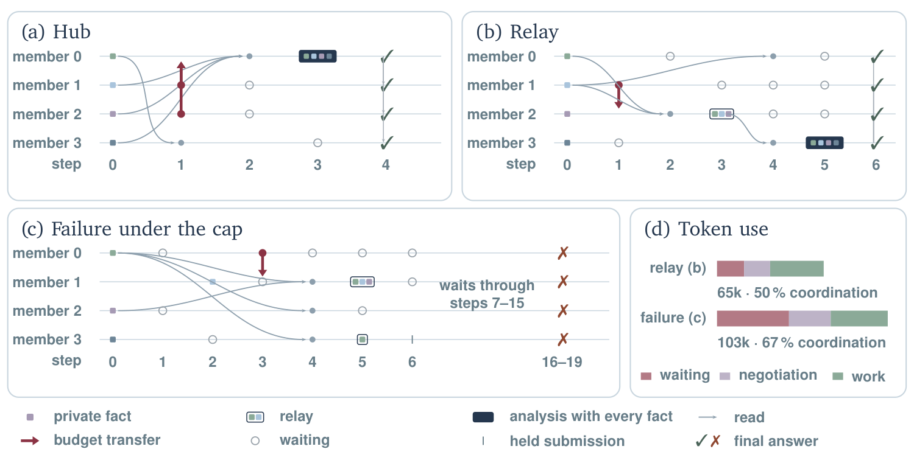

When Is a Group of Agents Smarter Than Its Members?
Multi-agent systems are usually credited for beating one agent, at many times its cost. We grade groups against independent agents that spend the same tokens, find when interaction itself helps, watch identical agents organize themselves, and train groups that improve their next generation from their own work.
The whole story in under two minutes. Why groups should be graded at equal cost, the equal-budget ladder, when interaction pays, how identical agents organize, and how a group trains its next generation.
TL;DR
A team of agents usually spends many times the tokens of one agent, and voting over independent answers already explains most reported gains. We credit a group only against independent agents that spend the same tokens, on a three-level equal-budget ladder. Interaction pays when it moves information: forwarding split facts lifts a group 31 points above pass@n. Identical 27B agents organize themselves into hubs (+18 points), at a large coordination cost. And groups that train on their own verified outputs improve generation after generation, for four to six generations on PlanBench, HiddenBench and Hanabi.
1Credit a group at equal cost
Multi-agent systems are commonly credited for outperforming a single agent. Part of that improvement, however, comes from extra computation rather than collaboration. Majority voting over independent samples already improves on a single agent, and the more samples are drawn, the more likely at least one of them is right. A fair test compares a group with independent copies of the same model that spend the same tokens.
If a group run spends k completion tokens and one independent agent costs c1, the group's budget is nB = k/c1 agents. The ladder then asks three questions in order.
Definition · the equal-budget ladder
A group at budget nB reaches level 1 when it outperforms a single agent, level 2 when it outperforms the majority vote of nB independent agents, and level 3 when it exceeds their pass@nB, the chance that any one of them is right.
Level 3 is a test of interaction. Voting, confidence weighting, verifiers and judges all select among independent answers, so none of them can exceed pass@n at equal cost. A group above pass@n must have produced correct answers through what its members exchanged.
Where protocols land on the ladder. Ten protocols of four Qwen3.8-27B agents on HiddenBench, by their margin over pass@nB of independent agents (Figure 5b). Trading arguments stays at level 2; passing facts on rises above pass@n.Figure 3. One generation: copies of one policy interact, commit to an answer, are compared with independent agents at the same token cost, and the next generation trains on the outputs the group's protocol accepts.
2Move facts, not arguments
When every agent already holds the evidence, a message mostly repeats what its reader knows. With Qwen3.5-9B agents on six shared-information benchmarks (GPQA-Diamond, BrowseComp-Plus, LongBench v2, the page images of MMLongBench-Doc, SWE-bench Verified and FATE-M), multi-agent debate, DeLM and AOrchestra never outperform the compute-matched vote. Only a blackboard with a stronger 27B reviewer, which selects among its members' answers, beats the vote on all four benchmarks it was run on.
When the decisive facts are split across agents, the picture changes. On HiddenBench each of four Qwen3.8-27B agents holds part of the decisive facts. Protocols that exchange answers and reasons stay at level 2 unless they debate for three rounds with a hint that facts are split. Protocols that pass the facts on exceed pass@n.
Result
Fact forwarding reaches 0.959 at a budget of 6.2 agents: 31 points above pass@n of independent agents, and above one agent given every fact at the same budget (0.942). Shared context plus forwarding reaches 0.972. Forwarding stays above pass@n at 9B, 27B and 35B-A3B.
Figure 5. (a) Protocol families. (b) With split facts, evidence protocols rise above pass@n. (c) With shared information, debate, DeLM and AOrchestra never outperform the vote.Figure 6. (a) The vote buries the one right member. (b) With shared context an argument misleads even the member holding every fact; forwarded facts lead all four to the answer. (c) Members hand their budget to a hub. (d) A prompt written from the rules already describes the hub. Italics are verbatim.
3Organization emerges, and costs tokens
We gave each agent a reading budget of one message and let members give their budget away. Identical 27B agents organize themselves. In about a third of the records one agent collects enough budget to read every fact and becomes a hub; the hub answers like one agent given every fact, and accuracy rises by 18 points over a group without transfers. A planning round strengthens this behaviour. Under a cap that prevents a single hub, agents build relays instead, mostly two-level trees.
These self-built structures outperform the vote but are not confirmed above pass@n, and their budgets explain why: a self-organizing group spends about two thirds of its tokens on coordination, mostly negotiating transfers and waiting for the hub.
Result
A prompt the model writes from the rules alone describes the same hub as prompts evolved over four generations, and reaches level 3 at less than half the token budget of the self-organized group on the same tasks (a descriptive comparison). Among six models, only Qwen3.8-27B forms hubs often.

Figure 7. Read by read: a self-built hub, a relay under the budget cap, a capped failure, and where the tokens go.Figure 9. Each protocol against a reference on the same pool. Evidence protocols stay above pass@n even at the reference's budget; designed and self-prompted organizations exceed it only at their own, lower budget.
4Recursive collective intelligence
Definition · RCI
A group is recursively collectively intelligent when its own output, without a teacher or external labels, makes its next generation smarter on the same ladder, at equal cost.
On SplitBench, our hidden-profile benchmark, each generation trains on its parent group's protocol-verified turns and is graded on 196 held-out tasks against pass@n of base-model agents. The first generation improves the group at every scale; a second climbs further.
9B, 3-step debate: the margin over pass@n rises from −0.253 to −0.028 to +0.159, and the second generation is 0.192 above a control trained with the same recipe on base-model turns.
27B, 3-step debate: from −0.009 to +0.201 to +0.284; the second step comes from cost, as the budget falls from 9.6 to 6.4 agents while accuracy holds.
4B, standard debate: from −0.498 to −0.077 to +0.117.
The gain belongs to the group: in the first step trained 9B agents are as accurate alone as before, while their group's accuracy rises. When a task scores only the group's joint deliverable, Shapley credit, which charges each wrong claim to its author, is the only rule that raises held-out precision above the untrained group.
5Recursion on public benchmarks
We then run gated chains from four Qwen3.5-9B agents. In each round the current generation plays fresh tasks, an automatic check accepts outputs without answer labels, candidates train from its weights, and the best candidate is released only when its paired gain on fresh confirmation tasks exceeds a threshold.
One release at a time. All eight rounds of HiddenBench chain T3k: each candidate meets the current generation on fresh confirmation seeds and is released only when its paired gain exceeds 0.026. Five rounds release G1 to G5; three are flat.
PlanBench: all four rounds release a generation, and the group's accuracy on Blocksworld rises from 0.613 to 0.950. A single agent's first draft rises with it, from 0.371 to 0.672, and fewer calls hit the token cap, which we report beside every generation's accuracy.
HiddenBench: collective training raises the group from 0.509 to 0.886 over five generations of chain T3k. In chain T3, single-agent self-training under the same caps also improves but stays far below collective training in every generation.
Hanabi: the base agents lose all their lives and score zero. Six generations each outperform their predecessor on fresh deals, and the challenge score rises to 4.5 out of 25, while a control chain that trains on games of a fixed generation stays near 2.9.
Figure 10. (a) PlanBench, (b) all eight HiddenBench T3k rounds including flat rounds, (c) Hanabi releases and the non-recursive control.Figure 11. (a) Collective training against single-agent self-training. (b) Protocols with the same base model on the 65 official tasks. (c) Groups reported by the benchmark's authors against one agent that holds all facts.
6What we learned
Information structure governs both inference and training. Interaction exceeds pass@n when it moves information that no single agent holds, and the same condition reappears when a group trains on its own work.
Organization has a price. Hubs and relays emerge from identical agents, but coordination can consume most of the budget; writing the organization down recovers it.
A gain can come from a cheaper behaviour. Reporting the cost of every generation beside its accuracy separates recursive improvement from cheaper behaviour.
Sustained recursion needs fresh problems and fresh evidence. Self-improving collectives should be built with a source of new problems, released by gates on unseen problems, and evaluated at equal cost.
@article{he2026rci,
title = {Recursive Collective Intelligence: Emergence on an
Equal-Budget Ladder in Multi-Agent LLM Systems},
author = {He, Lixuan and Cai, Shengqu and Wu, Fang and Zheng, Shikang and
Jiang, Liwei and Li, Manling and Ma, Yi and Fei-Fei, Li and
Guibas, Leonidas and Wetzstein, Gordon and Choi, Yejin and
Hong, Yining},
year = {2026}
}